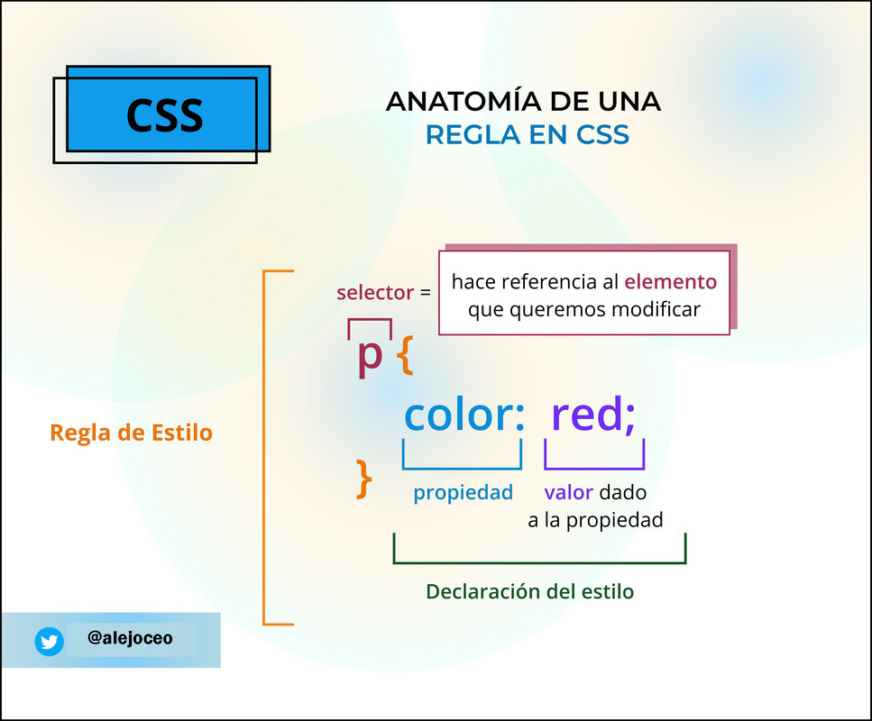

Trabajo Práctico
Catalina Petasny
1.1- ¿Qué significa CSS?
R: CSS son las siglas de "Cascading Style Sheet" (Que en español significa Hojas de estilo en
cascada)
1.2- ¿Para qué sirve el CSS? ¿Qué programa se utiliza para interpretar el CSS? (es para 🧠)
R: El CSS sirve para darle estilo y vida a la página y posicionarlo visualemente.
1.3- ¿A qué se llama regla de CSS?
R: La regla de CSS es un conjunto de propiedades y valores que se aplican a una o varias etiquetas.
1.4- ¿Cuál es la anatomía de la regla de CSS? Agregar imagen explicativa y utilizando una lista descriptiva
explicar sus elementos.
R: La anatomía de la regla de CSS está compuesta por un selector, declaración, propiedades y el valor de las
propiedades.

Anatomía de una regla
- Selector
-
El selector toma el/los elemento/s a dar estilo. Para darle estilo a un elemento diferente solo hay que
cambiar el selector.
- Declaración
-
La declaración aplica las propiedades que se quiera dar al elemento seleccionado en el selector.
- Propiedades
-
Las propiedades permiten dar el estilo al html. La propiedad es lo que le da color a las letras de los
párrafos, siempre se ubican a la izquierda.
- Valor de las propiedades
-
Las propiedades siempre tienen que tener un valor, cada una tiene valores definidos. Cada valor se ubica
a la derecha
1.5- ¿Qué es un selector en CSS?
R: Un selector es la primera parte de un elemento de una regla de CSS. Este toma el/los elemento/s a dar
estilo.
1.6- Identificar y definir los selectores: de ID, de clases, universal, de etiquetas, descendente.
- Selector universal
-
El selector universal nos permite ponerle estilo a todos los elementos HTML de un documento.
Se indica mediante el *
Ejemplo:
* {
color:red;
}
- Selector de clase
-
Los selectores de clases siempre inician con un . (punto). Los usuarios reconocen el punto y lo
distinguen del resto de los selectores.
Ejemplo: <p> class="primer-parrafo">Texto de un párrafo</p>
Para definir en HTML en el uso de los selectores de clase se utiliza el atributo "class". En cambio, en
css se aplica de la siguiente manera:
.primer-parrafo {
font-size: 2em;
}
- Selector de ID
-
El selector de ID es igual al de clases, pero se debe aplicar a un único HTML de la página.
Se debe a que el atributo ID de HTML identifica a un elemento HTML mediante un nombre.
Ejemplo:
<h1 id="titulo">Título Principal</h1>
Para aplicar CSS solamente ID al título, de debe seleccionar dicho ID, utilizar el "#" y seguido de eso
el nombre. Eso quedaría de la siguiente manera:
#titulo {
color: violet;
}
- Selector de etiquetas
-
Se le aplican propiedades CSS a una etiqueta. Se identifica sin utilizar < >.
Ejemplo:
p {
color:red;
}
- Selector descendente
-
Con el selector descendente se selecciona un elemneto que está dentro de otro del mismo tipo.
estos selectores siempre están conformados por dos o más selectores separados entre ellos. El último
será el elemento HTML que se le aplicará las propiedades CSS
Ejemplo:
p span {
color:green;
}
1.7- Explicar brevemente utilizando una lista ordenada: ¿cómo funciona el CSS?
Funcionamiento del CSS
- El navegador recibe el HTML mediante la red.
- El HTML se convierte en un DOM (Modelo de objetos del documento). El DOM representa el documento en
la memoria del ordenador
- El navegador va a buscar la mayor parte de los recursos vinculados al HTML, ya sean imágenes, videos hasta
incluso el CSS vinculado
-
El navegador analiza el CSS y ordena en diferentes cubos las distintas reglas según la clase de selector.
Para cada tipo de selector que se encuentre, calcula que reglas deben aplicarse y a que nodos en el DOM se
les aplica el el estilo según corresponda
-
El árbol de la renderización presenta la estructura en la que los nodos tienen que aparecer después de
aplicar las reglas.
-
En la pantalla se muestra el aspecto visual de la página.
1.8- ¿Cuáles son las tres formas para vincular CSS con HTML?
R: Las tres formas de vincular CSS con HTML son las siguientes:
Etiqueta style
- En el HTML, dentro de la etiqueta <head> se utiliza la etiqueta <style>, es decir que los CSS se
aplican al mismo documento HTML.
Utilizando el atributo style
- En el archivo HTML se le aplican los estilos directamente a la etiqueta
Utilizando un archivo externo
- Esta opción nos permite vincular un documento HTML con uno CSS. Los archivos CSS tienen la extenión .css
seguido del nombre del proyecto, ya sea estilos.css o style.css.
Se pueden ordenar los archivos css dentro de una carpeta llamada css. En el <head> se debe utilizar la etiqueta <link>